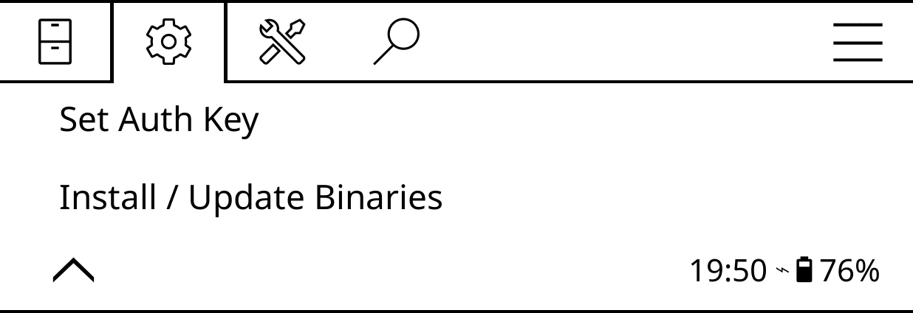
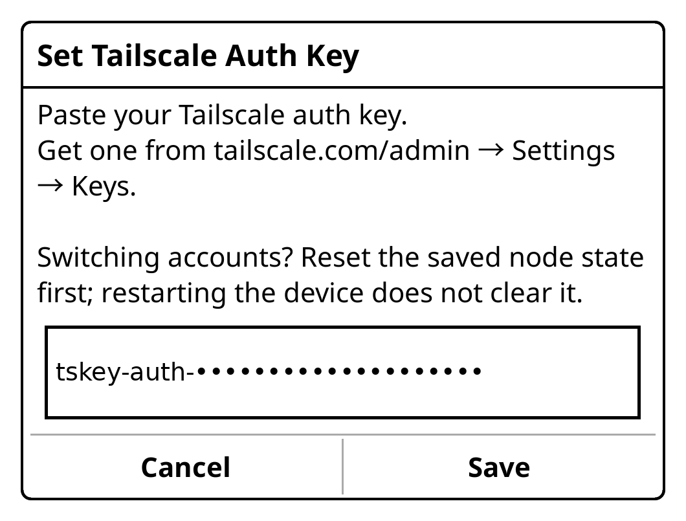
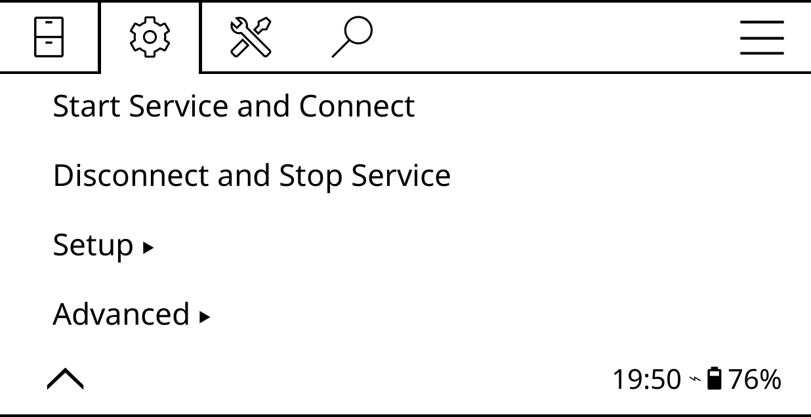
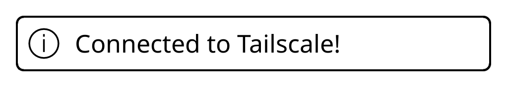

What it is
One KOReader plugin, one menu. It fetches the official Tailscale ARM binaries,
runs tailscaled in kernel-TUN mode and brings the reader up on your
tailnet with SSH on.
-
Self-contained. Binaries, node state and logs all live in
tailscale.koplugin/bin/. No KUAL. Delete the folder and it is gone. -
Kernel TUN, SSH on. Runs the official
tailscaledin kernel-TUN mode and comes up withtailscale up --ssh. - Network path only. SSH in from anywhere, reach a private OPDS or library server. No servers bundled.
How to set it up
-
Download the plugin
Get
tailscale.koplugin.zipand unzip it into KOReader'splugins/folder — on Kindle usually/mnt/us/koreader/plugins/. Restart KOReader. -
Create an auth key
At tailscale.com/admin → Settings → Keys. A one-off key is fine.
-
Install the binaries
Settings → Network → Tailscale → Setup → Install / Update Binaries. Pulls the current stable release from
pkgs.tailscale.comover Wi-Fi; takes a few minutes.
-
Paste the key
Setup → Set Auth Key, paste, save.

-
Connect
Start Service and Connect. The Kindle shows up in your admin console, and
ssh root@<tailscale-ip>works.

-
Turn off key expiry
For the device in the admin console, so you never have to paste a key again.
Disconnect and Stop Service reverses it. Advanced has
each step on its own plus Connection Status. Switching accounts?
Rename bin/tailscaled.state before setting the new key — restarting
does not clear it. Logs land next to it in bin/.
Compatibility
Two hard requirements. The device kernel needs a working TUN device at
/dev/net/tun — there is no userspace-networking fallback. And the
plugin installs the 32-bit arm build, which is what KOReader on
Kindle runs on; a device with a 64-bit-only userland is not handled.
One SSH command answers the question for any device:
ls -l /dev/net/tun. If it is there, the plugin should work.
| Device | Status |
|---|---|
Kindle Paperwhite 5 (11th gen, armv7l) |
Tested — this is the device it was built and used on |
| Kindle Paperwhite 4 (10th gen), Oasis 2 & 3, Kindle 10th/11th gen, Scribe | Expected to work — same jailbreak era and kernel generation, but untested |
| Kindle Paperwhite 6, Colorsoft, Kindle 2024 (12th gen), Scribe 2024 | Likely to work, but untested — and only if its firmware can be jailbroken |
| Older Kindles (Paperwhite 1–3, Voyage, Touch) | Unverified — TUN support is not a given on these kernels, so check first |
| Kobo and other KOReader devices | May work with kernel TUN and a 32-bit userland, but not a target here |
The Kindle must be jailbroken with KOReader installed. Keep the screen awake while testing — Kindle drops Wi-Fi when it sleeps — and note that SSH tends not to work while the device is plugged in over USB.
Tried it on anything other than a Paperwhite 5? Please report your device, whether it works or not. Each report turns an “expected” row into a tested one.
Support
The plugin is free and always will be. If it saved you an afternoon, you can buy me a coffee.